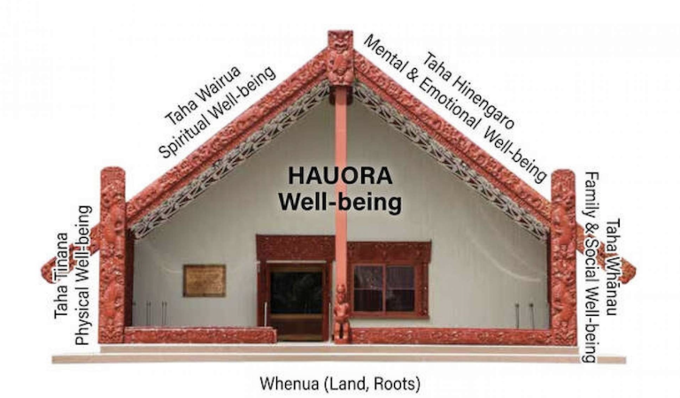

Introducing Te Whare Tapa Whā
Te Whare Tapa Whā
Te Whare Tapa Whā is a model of health developed by Tā Mason Durie in 1984 which provides a Maori perspective. It describes the wellbeing and health of a person as Wharenui(meeting house) which consists on four dimensions of wellbeing supported by the Whenua:
- Taha Whānau / Family Wellbeing
- Taha Hinengaro / Emotional and Mental Wellbeing
- Taha Tinana / Physical Wellbeing
- Taha Wairua / Spiritual Wellbeing
- Whenua / Interconnections to the Land and Environment
Here is my plan base upon this model.
| Wall | Activity |
|---|---|
| Taha Tinana / Physical Wellbeing | Workout at the gym 4 times a week Walk the dog everyday |
| Taha Whānau / Family Wellbeing | Call my parents, grandma and in-laws as often as I can Make time to see Whanau as much as possible |
| Taha Hinengaro / Emotional and Mental Wellbeing | Mindfulness meditation everyday Journal Spend time with pets |
| Taha Wairua / Spiritual Wellbeing | Mindfulness meditation Practice gratitude |
| Whenua / Interconnections to the Land and Environment | Go for outings into nature with Whanau, dog and partner |